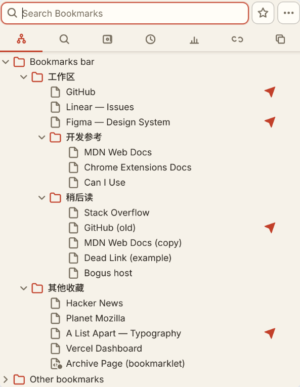
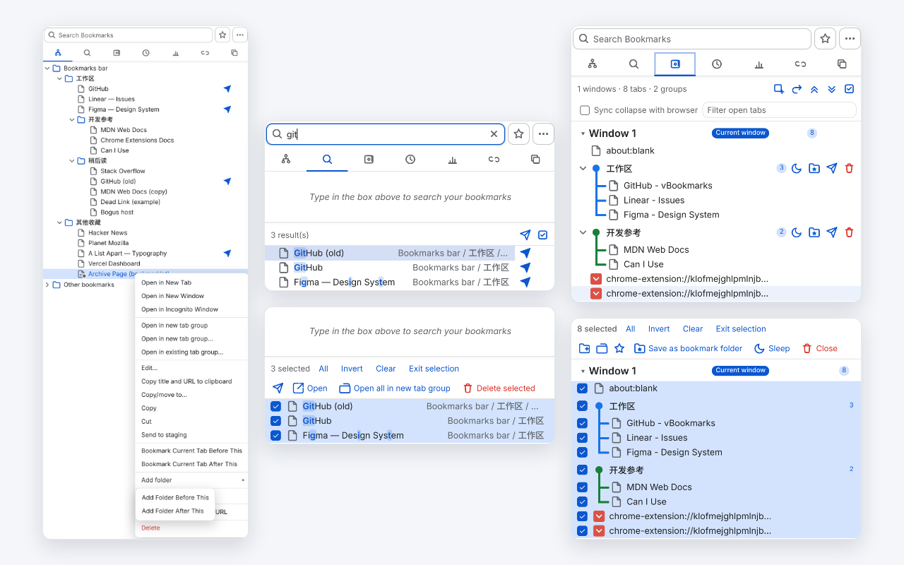
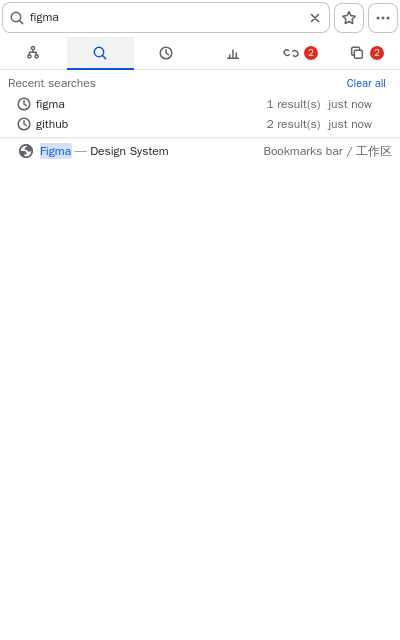
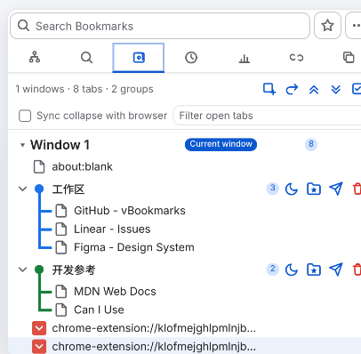
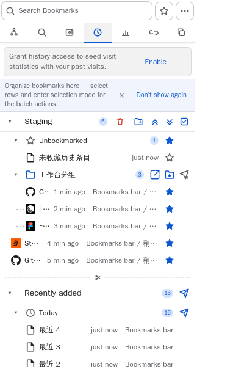
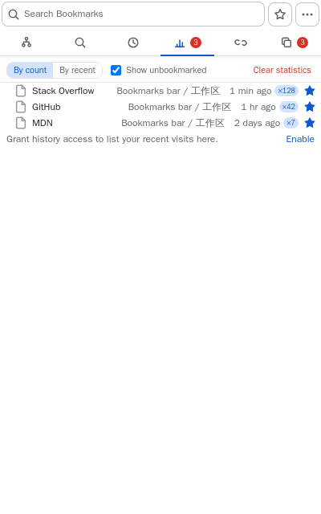
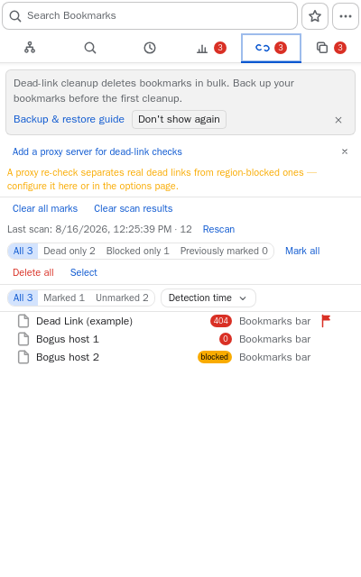
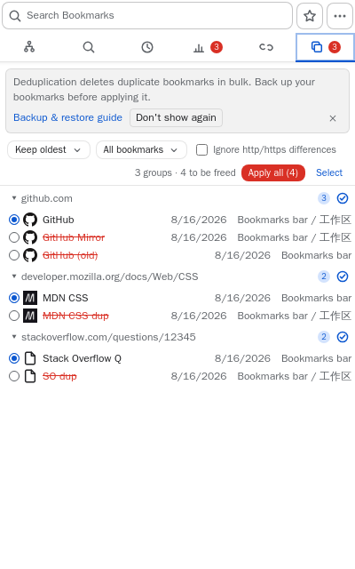
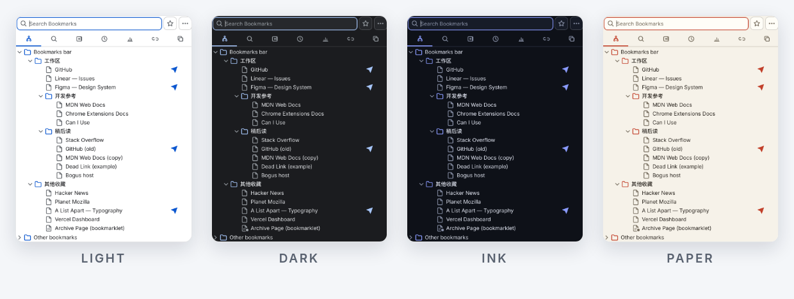

书签树
经典层级结构 —— 输入字母直达、悬停快捷操作、拖拽、按文件夹排序。
经典 Neat Bookmarks 的活跃续作
vBookmarks 把整个书签库装进一个极速弹窗：毫秒级模糊搜索、七个专用视图、⌘K 命令面板。 免费开源，自 2011 年持续打磨至今。

为什么是 vBookmarks
它管理的正是你现有的那些书签 —— 补上的只是官方管理器始终没做的速度、结构与清理能力。
标题、网址、文件夹皆可匹配 —— 弹窗、侧边栏、地址栏（输入 * 再按空格）皆可唤起。匹配高亮，中日韩友好。
打开、移动、排序、切视图、换主题 —— 每个操作都有斜杠命令。还支持自定义命令，跨设备同步。
新书签先落进暂存区，而不是直接淹没进书签树：随手分组、加星、批量归档，或者任它们流进「最近添加」时间线。
一条命令把整个窗口的标签页存成书签文件夹，日后作为命名标签页组整体重开。
批量检测，支持代理复检 —— 分得清「网站挂了」和「你的网络访问不了」。
重复书签按网址分组、批量合并，六种保留策略任选 —— 最旧、最新、访问最多等等。
任意文件夹里插入可自定义颜色与粗细的分隔线 —— 这是 Chrome 从未有过的能力。
清理从此没有心理负担 —— 轻点提示条，整个删除的子树原样找回。
七个视图
Alt+1…7 或 ⌘K 面板直达。每个视图只做一件事，并且全部支持纯键盘操作。

经典层级结构 —— 输入字母直达、悬停快捷操作、拖拽、按文件夹排序。

双区搜索：上方最近搜索，下方带路径面包屑的模糊结果。

每个窗口的标签页一目了然 —— 存成文件夹，再作为命名分组重开。

新书签的待整理区，加上「最近添加」时间线。每天五分钟，整理完毕。

你最常访问的书签，计数完全在本地。按次数或最近排序，随时暂停。

批量扫描、按状态筛选、标记复核或删除 —— 对被墙站点支持代理复检。

按网址分组、批量合并。选好保留策略，一键找回清爽的书签树。
全键盘流
方向键、Home/End、PageUp/PageDown、输入字母直达。Enter 打开，F2 重命名，Delete 删除 —— Esc 一层层退出菜单、面板、多选与搜索，干净利落。
打造成你的样子

另有跟随系统、界面缩放、自定义 CSS 和自定义工具栏图标。弹窗或侧边栏，随你选。
免费且安心
没有需要注册的账号，没有任何数据外发。扩展不带统计 —— 这个主页同样不带。
vBookmarks 通过官方接口管理 Chrome 已有的书签 —— 走 Chrome 同步的照常同步。访问统计与扫描结果只留在这台设备上。
每一行代码都在 GitHub 上，由一位至今亲自回复每个 issue 的开发者维护。欢迎 fork、审计、学习。
用上一周，你会第一次觉得书签是整齐的。
把 vBookmarks 装进 Chrome常见问题
是的 —— 永久免费，没有广告、没有订阅、没有高级版。MIT 协议开源，你也可以直接从 GitHub 自行构建。
桌面版 Chrome 114 及以上。同一套 Manifest V3 包也可以直接装在 Microsoft Edge 等支持 MV3 扩展的 Chromium 内核浏览器上。
不会。它通过官方书签 API 管理 Chrome 现有的书签 —— 在 vBookmarks 里的整理会随 Chrome 同步走。偏好设置与设备级数据留在本地。
在地址栏输入 *，按空格，然后开始输入。结果与弹窗用的是同一套模糊排序 —— 标题、网址、文件夹都能命中。
新书签的待整理区。书签不再直接塞进书签树，而是先落在暂存区：随手分组、加星、批量归档 —— 或者不管它，等你每天那五分钟的整理时间。
那款经典的极简书签弹窗，在 Chrome 移除旧 API 后停止了更新。vBookmarks 从 2011 年起作为它的直系继任者持续维护至今 —— 同样的克制，强得多的能力。历史与更新日志见 GitHub README。